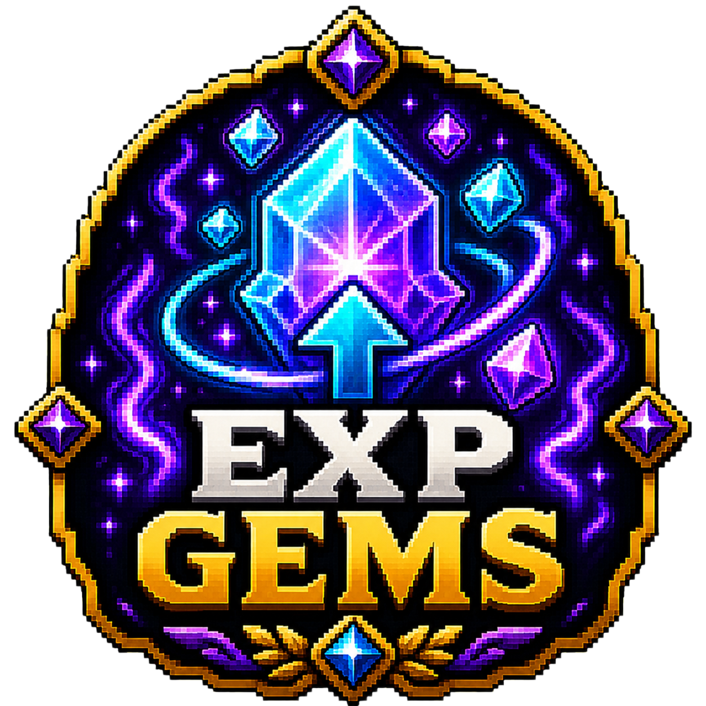
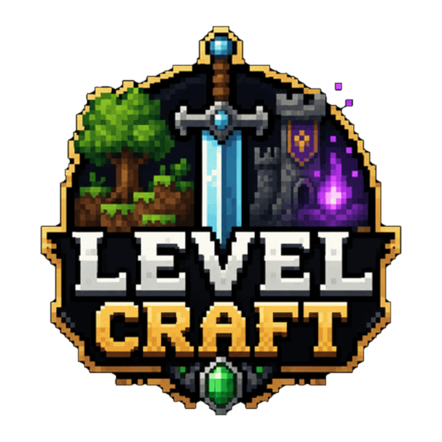
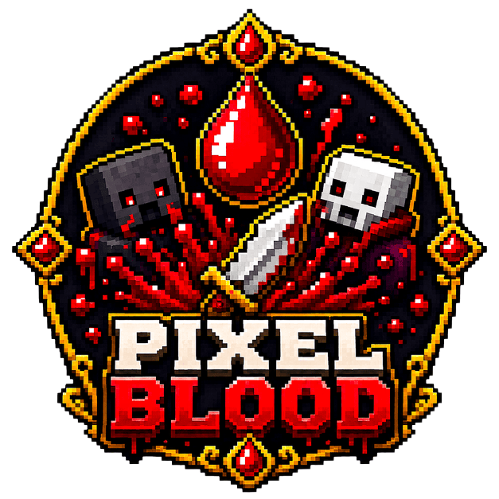

✓
Craftable experience gems
Turn progression bonuses into items players can make or earn.

Craftable gems that enhance experience gains.
 Live plugin page views
Live plugin page views
Full overview
EXP-Gems turns experience bonuses into physical collectible items. Instead of hiding progression behind a permission node, the plugin gives players visible gems that can be crafted, traded, rewarded and upgraded.
Different strengths create a clear path from early utility to valuable end-game rewards. The system is especially suited to RPG servers where item identity matters as much as the numerical bonus.
How it works
Players obtain gems through the server's chosen recipes, shops or rewards. The gem then provides its configured experience benefit, giving progression a visible item and economy value.
Tiered strengths allow administrators to distribute smaller bonuses freely while protecting the most powerful versions as rare goals.
Administration
Experience multipliers and acquisition are configurable so the resource can support a modest survival bonus or a stronger RPG reward system. As a legacy plugin, test compatibility and stacking behaviour with other XP systems.
Feature breakdown
Each headline feature is expanded below so visitors can understand the real server use rather than seeing a short tag list.
Turn progression bonuses into items players can make or earn.
Separate early, mid and late-game reward values.
Physical upgrades fit naturally into quests, dungeons and ranks.
Gems feel like special rewards rather than ordinary renamed materials.
Adjust the experience increase to match the server economy.
Use gems as event prizes, shop stock or tradeable progression items.
Getting started
The platform buttons include downloads, changelogs and the original public resource discussion.
Confirm the legacy version works on the target server.
Configure gem tiers and experience bonuses.
Choose recipes or reward sources.
Test interaction with other XP multipliers before release.
Community feedback
Live ratings and recent written reviews from the public Spigot resource page.
Review data is loaded through Spiget. Static rating fallbacks remain visible if the service is unavailable.
Related projects

GhoulCraft ExclusiveRPG Progression Suite
A complete RPG progression ecosystem built around survival gameplay.

Public PluginCombat Immersion
Responsive blood trails, pools, bursts and bleeding effects.
Survival Utility
Crystal-themed healing tools for survival gameplay.